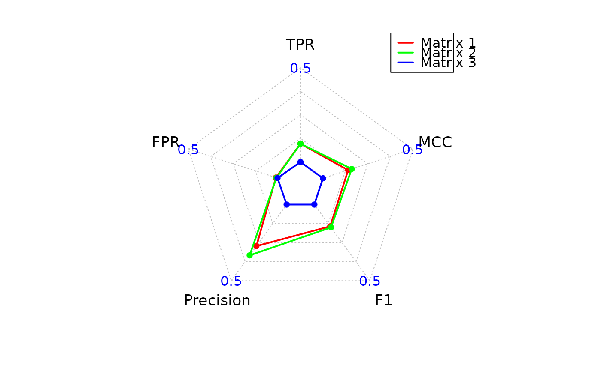

Computes classification metrics by comparing predicted adjacency matrices to a ground truth binary network. Visualizes the performance scores using a radar (spider) plot.
pscores(ground_truth, predicted_list, zero_diag = TRUE)A square binary adjacency matrix representing the ground truth network. Values must be 0 or 1. Only the upper triangle is used for evaluation.
A list of predicted adjacency matrices to evaluate.
Each must have the same dimensions and row/column names as ground_truth.
Logical. If TRUE (default), sets the diagonal of ground_truth to zero
before evaluation, removing self-loops.
A list with one element:
Statistics: A data frame containing evaluation metrics (TP, TN, FP, FN, TPR, FPR, Precision, F1, MCC)
for each predicted matrix.
For each predicted matrix, the confusion matrix is computed using the upper triangle (non-self edges). Metrics including True Positive Rate (TPR), False Positive Rate (FPR), Precision, F1-score, and Matthews Correlation Coefficient (MCC) are calculated.
A radar plot is automatically generated summarizing the key scores across matrices.
Requires the fmsb, dplyr, and tidyr packages.
# Simulate ground truth and predictions
ground_truth <- matrix(sample(0:1, 100, replace = TRUE), nrow = 10)
diag(ground_truth) <- 0
pred1 <- ground_truth
pred2 <- matrix(sample(0:1, 100, replace = TRUE), nrow = 10)
# Compute scores and generate radar plot
result <- pscores(ground_truth, list(pred1, pred2))

result$Statistics
#> Predicted_Matrix TP TN FP FN TPR FPR Precision F1
#> 1 Matrix 1 26 19 0 0 1.0000000 0.0000000 1.0000000 1.0000000
#> 2 Matrix 2 14 10 9 12 0.5384615 0.4736842 0.6086957 0.5714286
#> MCC
#> 1 1.00000000
#> 2 0.06400461